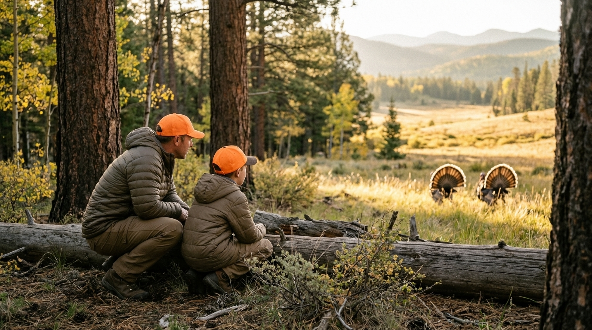

Single-Parent & Youth Outdoor Mentorship Program
Building Confidence, Conservation Ethics & Family Bonds in Northern New Mexico.
Set across 1,917 acres in Chama, New Mexico, our Single-Parent & Youth Outdoor Mentorship Program offers structured, low-cost weekend retreats focused on mentored youth wild turkey hunting and catch-and-release trout fishing in a safe, supportive sanctuary environment.

Program Highlights
1. Mentored Youth Wild Turkey Hunts
Spring and fall youth mentorship retreats emphasize calling, woodsmanship, and fair-chase ethics. Youth cohorts are scheduled separately from adult deer and elk seasons and never overlap with commercial groups.
2. Catch-and-Release Trout Fishing
Young anglers and their parents learn fly-casting, spin-fishing, and cold-water conservation on our two solar-fed trout ponds from adaptive casting docks under a strict 2:1 youth-to-adult spotter ratio.
3. Family Co-Residency Lodging
Single-parent families stay together in private cabins inside our Adaptive Guest Cabin Village, with every minor residing in the exact same cabin unit with their accompanying parent or legal guardian.
Uncompromising Youth Safety Standards
- Signed parent/guardian release agreements, swimming proficiency checks, and allergy/medical screenings required prior to arrival.
- Firearms and archery equipment remain strictly unloaded and unchambered inside the 100-Acre Sanctuary Core.
- No predator hunting on sanctuary grounds, and all staff and escorts carry EPA-registered bear spray.
Request Youth Retreat Information
Single-parent families and youth organizations can contact us at info@dgchamasanctuaryproject.com.
Inquire About Youth Retreats